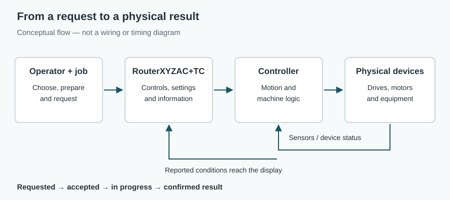
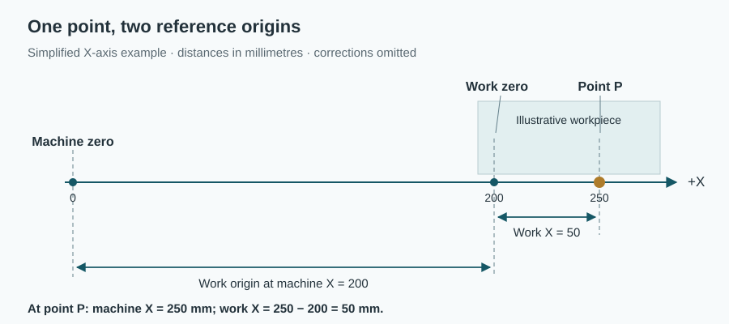

RADONIX · ROUTERXYZAC+TC · CHAPTER 1
Operator Manual · English · 7 October 2026
Introduction and How to Use This Manual
Start here if CNC machining is new to you. Learn what the machine does, what the software tells you, and how to use this book before following an operating procedure.
Expanded draft for review. This introductory chapter explains concepts; it is not a machine-start or cutting procedure.
1.1 Before you begin
Welcome to the RouterXYZAC+TC Operator Manual. This manual is written for the person who prepares a machining job, operates the machine through the software, watches the job while it runs, and responds when the machine needs attention. You do not need to know computer programming to begin reading. You do need to learn what the machine is being asked to do and how to recognize whether it has done it.
If this is your first experience with a CNC machine, some familiar words will have a more specific meaning. A tool is usually the cutter fitted to the machine, not a toolbar icon. A program may mean a machining instruction file, not the application you opened in Windows. A position is a number measured from a particular reference, not simply where something appears in a picture. This chapter introduces these distinctions before the operating procedures use them.
Read this chapter as an orientation. It explains what the system contains, how information moves between the operator and machine, and how to find and follow the right procedure. It does not ask you to start the spindle, move an axis or run a cutting job. The later operating chapters explain those actions with their prerequisites and expected results.
Reading the manual supports practical training; it does not establish that a new operator is ready to use an unfamiliar physical machine alone. Before operating the real installation, learn its physical controls, working area, guarding and emergency procedure from the person responsible for that machine.
- Understand the difference between the machine, the controller and the operator application.
- Recognize the main machine parts and the basic words used throughout the book.
- Distinguish a value you enter from a condition the machine reports.
- Know how to read a procedure, a table, a warning and a figure.
- Know when to continue, when to read another section and when to ask for assistance.
1.2 What a CNC router does
CNC means Computer Numerical Control. In ordinary language, a computer-controlled system uses numerical instructions to direct the machine. Those instructions describe such things as where a tool should move, how quickly it should travel and when an associated operation should occur. The operator prepares the job and supervises its execution rather than guiding every movement by hand.
A router removes material with a rotating cutting tool. The starting piece of material is called the workpiece. Material is removed from selected places to produce a shape, edge, slot, pocket or other feature. The exact materials and operations permitted depend on the physical machine, its tooling and its approved process. The name of the software does not determine whether a particular material or cutting method is suitable.
Two types of movement are involved. The spindle turns the cutting tool around its own axis. Separately, the machine moves the tool relative to the workpiece along its controlled directions. Rotation makes cutting possible; relative movement makes the tool follow the required shape. A spinning tool can remain in one place, and the head can move while the spindle is not turning. These are different actions and have different controls.
Automatic movement does not remove the need for preparation. A program can describe a mathematically valid rectangle even when the physical workpiece is in the wrong place. The system must have the correct relationship between the program, the machine coordinates, the workpiece and the installed tool.
1.3 Meet the main parts of the machine
Learn the names of the parts on the actual installation before associating them with software controls. The same function may look different on different machines. For example, tools may be stored in a row of fixed stations or in another magazine arrangement. This manual describes the function; the machine photograph and machine-specific instructions identify the actual hardware.
| Part or term | Plain-language meaning | Why it matters to the operator |
|---|---|---|
| Machine table or working bed | The area that supports the workpiece and its workholding equipment. | Its usable area and the movement envelope are related but are not necessarily identical. |
| Workholding / fixture | The arrangement that keeps the workpiece in its intended position, such as the approved clamps or other installed holding equipment. | The toolpath must be suitable for both the workpiece and the space occupied by the workholding. |
| Gantry or bridge | A structural assembly that spans part of the machine and supports moving components. | Some machines drive both sides of the bridge; the two sides must work together. |
| Head | The moving assembly carrying the spindle and related equipment. | The whole assembly needs clearance, not only the tip of the cutter. |
| Spindle | The powered rotating unit that turns the tool. | The spindle run command and requested rotational speed are distinct from axis movement. |
| Cutting tool / cutter | The replaceable item that actually removes material. | Its identity, dimensions and condition must match the intended job. |
| Tool holder | The assembly that holds a tool in the spindle, where that arrangement is used. | The holder and grip mechanism are part of the physical tool setup. |
| Tool station / magazine | A defined storage location or collection of locations for tools. | The recorded station information must agree with the physical arrangement. |
| Tool setter / probe | The configured contact device used by the tool-length measurement operation. | It helps establish tool length; it is not the same thing as a workpiece origin. |
| Sensor | A device that reports a physical condition, such as a switch being reached or a mechanism being in position. | A sensor indication supplies evidence about one specific condition, not the entire machine. |
| Drive and motor | The equipment that produces and controls axis movement. | A drive fault can make an axis unavailable even though its coordinate is still displayed. |
| Roller or other auxiliary equipment | Machine-specific equipment used to support the process. | Only installed and commissioned equipment should be treated as an available operating function. |
RouterXYZAC+TC contains a catalog for up to 32 numbered tool stations in the current application profile. This is the software’s configured catalog, not a claim that every delivered machine has 32 physically installed tools. The operator’s available choices depend on the enabled stations and the actual setup.
The installed machine and its main components
Insert a clear photograph of the actual delivered router, taken with the machine stationary. Label the working bed, workholding, gantry, head, spindle, tool magazine and tool setter. Include rollers only if fitted. Identify the physical operator station and emergency-stop control. Use a second view if a component is hidden; do not guess its location.
Suggested file: assets/images/01-installed-machine.png
1.4 Understanding axes and coordinated movement
An axis is a controlled direction of movement. This application presents three main linear coordinates: X, Y and Z. X and Y describe the two directions across the working area; Z describes the vertical direction in this router profile. Moving in a positive direction increases the corresponding coordinate, and moving in a negative direction decreases it.
Do not decide which physical direction is positive by looking at the left or right side of a screen image. The camera can rotate, and the physical machine configuration determines the axis arrangement. Identify the directions from the machine’s labels and approved setup information. In particular, a three-dimensional preview can show the same path from many viewpoints without changing the machine’s coordinate system.
When one axis moves, one coordinate changes. When axes move together, the controller coordinates their progress. A diagonal line on the workpiece may require X and Y to move at the same time. A three-dimensional move can involve X, Y and Z together. This is why a machining path is more than a collection of unrelated button presses.
The base profile has X, Y and Z. Engineering can enable a companion motor for each direction under Controller > Axes: XG, YG or ZG. Gantries default to disabled. An enabled companion follows its master during coordinated movement; it is not another work coordinate in an XYZ job. Axis labels show the name first and the PLC hardware slot second, for example X [AX00].
An axis can be ready to move without the complete machine having finished homing. Homing is the procedure that establishes the machine reference using its configured sensors and sequence. Readiness and homing answer different questions. Later chapters explain the indicators and the Home procedure in detail.
1.5 The operator, application, controller and machine
The word system includes several cooperating parts. The operator application is the visible Windows interface. It provides buttons, fields, program views and messages. The controller handles the motion and machine-control functions behind that interface. Drives, motors and other devices turn the controller’s commands into physical actions. Sensors and device status provide information back to the control system.

Consider the difference between asking for an action and observing its result. Pressing a control can submit a request. The system checks whether the operation is allowed. If accepted, it may start a sequence with several stages. Only later can the relevant completion or feedback confirm the result. Reading the status at each stage is part of operating the machine.
Likewise, a displayed spindle speed can be a setpoint—the value requested by the operator or program. It should not be read as a direct measurement of shaft speed unless the relevant display explicitly provides such a measurement. A drawing of the tool in a preview is also not a photograph of its physical location.
1.6 The different meanings of “program”
Throughout the manual, the surrounding words tell you which kind of program is being discussed. Learning this distinction prevents a common mistake: using a machine-logic editor when the intention was only to edit a cutting file.
| Name used here | What it is | Typical operator relationship |
|---|---|---|
| RouterXYZAC+TC application | The Windows software with the main window, settings and diagnostic forms. | You open it to operate and inspect the machine. |
| Machining program / G-code file | A file describing machining movements and associated commands for a job. | You select the approved file, review it and request its execution. |
| PLC program | Machine-control logic used for functions such as homing, interlocks and parts of tool exchange. | You may view its status; source changes require the relevant authorized knowledge and procedure. |
G-code is a commonly used name for the numerical instruction language in the machining file. A file can contain coordinates, movement commands, feed values, spindle requests and tool-related instructions. The operator does not need to memorize every command before learning the interface, but must be able to identify the correct job and recognize when a file has been rejected or contains a warning.
A machining file often comes from a preparation workflow involving a design and a toolpath-generation application. CAD refers to computer-aided design; CAM refers to computer-aided manufacturing. A postprocessor produces output intended for a particular controller or instruction dialect. These terms may appear in conversations with the person who supplies your files. They do not imply that every drawing or every file generated for another machine can be opened and executed correctly here.
PLC means Programmable Logic Controller. In this manual, PLC programs are the machine logic available through the controller application. They coordinate conditions and sequences, rather than simply representing the shape to cut. Editing that logic can change how the machine behaves across many jobs. It is a different responsibility from loading the next production file.
The software supplies factory PLC sources, but a machine may have saved, machine-specific versions. Therefore a manual based on the factory behavior must be used together with the configuration and approved instructions for the actual installation.
1.7 Position, distance and the point called zero
A position tells you where something is relative to a reference. A distance tells you how far apart two positions are, or how far a movement travels. They are not interchangeable. If a coordinate changes from 100 mm to 120 mm, the movement along that axis is 20 mm; the destination is 120 mm.
The reference point is often called zero or the origin. A machine has its machine-coordinate frame. A job can also use a work-coordinate frame whose origin is placed to suit the workpiece and program. The same physical location can therefore have different numerical descriptions in different frames.

A tool correction or offset accounts for a difference that the control system must consider when relating the program to the actual tool. For example, two tools can extend different distances from their holders. Tool-length measurement and compensation help the system use the intended working coordinates with the selected tool. The tool-length reference is not the same as the workpiece zero.
You will encounter six named work-origin systems, G54 through G59. At this stage, think of them as six stored reference choices. Their selection, editing and use by a machining file are explained later. For now, remember to ask “relative to which reference?” whenever a coordinate is entered or read.
1.8 Units and values you will encounter
A number without its unit is incomplete information. The value 10 could mean a distance, a speed, a percentage or a waiting time. Before entering a value, read the field name, unit and description. The fact that a field accepts a number does not establish that the number is appropriate for the job.
| Quantity | Unit or notation | Meaning and example |
|---|---|---|
| Position or linear distance | mm | Millimetres. A 1 mm step describes a distance, not a speed. |
| Manual or displayed motion speed | mm/s | Millimetres per second. At a constant 10 mm/s, a 20 mm movement would take 2 seconds if acceleration and deceleration were ignored. |
| Programmed feed in a per-minute mode | For example, mm/min | Distance per minute in the program’s selected length unit. 600 mm/min equals 10 mm/s. |
| Spindle speed | RPM | Revolutions per minute. This is rotation, not the speed of the head across the table. |
| Override | % | A percentage that scales a specified quantity. Which quantity it affects depends on the control. |
| Waiting time | ms or s | Milliseconds or seconds. 1,000 ms equals 1 s. |
| Tool number | For example, 1 or T01 | An identity, not a measurement. In this application, tool zero means an empty spindle. |
Feed describes how quickly the tool travels relative to the workpiece during a movement. Spindle speed describes how quickly the tool rotates. Increasing one is not the same as increasing the other. Selecting appropriate values requires the approved machining process, tooling and material information; this introduction does not provide cutting parameters.
An override changes a particular requested rate by a percentage. The program-feed control and the manual-jog percentage serve different purposes. Do not assume that a percentage slider affects every kind of machine movement. Read the operating chapter for that control before using it.
Numerical examples in this chapter explain units and relationships only. They are deliberately not a machine setup, recommended feed or test program.
1.9 Why machine state matters
A command is available only under suitable conditions. In ordinary use, the interface takes account of connection state, active motion, program preparation, homing, positioning, tool operations and access permissions. Understanding those states is more useful than remembering that a button happened to be enabled at a previous moment.
| Word or phrase | How to understand it |
|---|---|
| Offline / disconnected | The application is not currently operating through an active controller session. Some information and settings can still be visible. |
| Connected / online | A controller session exists. Operational network and axis conditions still matter for actual motion admission. |
| Ready | The indicated component or operation meets its readiness conditions. Read what is ready; an axis-ready indicator is not the same as all axes homed. |
| Homed | The configured homing reference has been established for the indicated axis or machine state. |
| Idle | The relevant operation is not currently executing. Check the complete machine context; one idle path does not describe every other activity. |
| Loading / preparing | The application is reading or preparing a machining job. Other actions may be temporarily restricted. |
| Running / active | An operation is in progress. It can include movement or a wait for another operation or confirmation. |
| Stopping | A stop is in progress; the request and the completed stop are different events. |
| Fault / error | The system has detected a problem that requires attention before the affected operation can proceed. |
A greyed-out control normally means that it is unavailable in the present context. It may need a different access level, a completed operation, a valid connection or a different machine state. It does not necessarily mean the control is broken. Read the nearby description or status message and use the relevant troubleshooting procedure.
Similarly, opening the application is not the same as connecting to the controller. Connecting is not the same as completing Home. Loading a job is not the same as requesting Run. An accepted Run can begin with tool preparation or positioning before any cutting starts. Keeping these distinctions in mind will make the later procedures easier to follow.
The application offers Simulation and Normal runtime modes. Simulation uses the application’s simulated mechanical behavior for supported functions. It is useful for learning the workflow, but is not a measurement of the actual machine’s clearance, wiring or stopping behavior. Confirm the intended mode and its connection result before treating an operation as a practice exercise. A selected mode setting and a successfully connected runtime are separate facts.
1.10 Your role and the limits of software information
The operator brings together information from the job, the screen and the physical machine. The software can show a file, reject certain commands, display reported states and carry out programmed sequences. It cannot by itself establish that the correct material was loaded, that every fixture is clear of the head, or that the displayed tool identity matches a tool someone changed outside the approved procedure.
The division of responsibilities below is a guide to learning and communication. Your workplace may use different job titles. Follow its authorization rules as well as the software’s access requirements.
| Role | Typical responsibility |
|---|---|
| Operator | Prepare and identify the job, follow approved setup and operating procedures, supervise execution, inspect results and report unexpected behavior. |
| Program preparer | Supply a machining file appropriate for the job, tooling, controller dialect and intended setup. |
| Setup or engineering personnel | Establish and approve machine configuration, motion parameters, tool-station geometry, mappings and machine logic. |
| Maintenance or service personnel | Investigate equipment faults and restore the installation using the applicable service procedure. |
RouterXYZAC+TC distinguishes Operator and Engineering access. When local passwords are configured, Operator access is requested at startup and Engineering access when entering Configuration. Successful access is retained for the current application session. Some security functions have their own authorization requirements. Detailed login and password-management instructions belong to their own chapters.
A successful login is permission to use the functions made available to that account; it is not a substitute for understanding the effect of a change. Conversely, a read-only field can be useful information even when you are not allowed to edit it.
When asking for help, describe what you intended, what you requested and what you observed. For example, “I selected tool 3, the request was accepted, and the operation stopped while waiting for clamp confirmation” is more useful than “the tool button does not work.” The session report can help identify the sequence, but it must be read together with the physical situation.
1.11 How a job progresses through the application
The following learning map introduces the main stages of a job. It shows why later chapters appear in their order. It is not a button-by-button startup or production checklist: several stages require the detailed procedures and the approved instructions for the machine.
- Establish the operating context.
Identify the machine, intended runtime mode, user access and connection state. Know whether the work is a practice session, setup activity or a production job.
- Establish machine readiness.
Follow the startup and homing procedures and resolve indications that prevent the machine from becoming ready.
- Establish the physical job setup.
Confirm the workpiece, workholding, required tools and the references that relate the job to the machine.
- Open and review the machining file.
Read the preparation result, inspect the source identity and preview, and investigate warnings before requesting execution.
- Request and supervise execution.
Use the execution procedure, watch entry positioning and any tool preparation, and monitor progress and messages.
- Handle interruptions deliberately.
Use the appropriate stop or continuation procedure. Recheck what is retained and what has changed rather than assuming every interruption has the same outcome.
- Complete the job and leave a known state.
Check the result, follow the end-of-job procedure and record information needed by the next operator or support personnel.
These stages connect to one another. A later change to a tool, origin or motion setting can require earlier checks to be repeated. A file that was correct for yesterday’s setup is not automatically correct for a different workpiece position today.
1.12 How to use this book
For a first reading, work through the introduction and the startup, screen-orientation and machine-preparation material before attempting the execution chapters. Do not begin with a mid-program restart simply because it is the function needed at that moment. Restarting depends on understanding the program state, tool state, coordinates and entry motion.
Once you understand the overall workflow, use the manual as a reference. Find the task in the main contents, open its chapter and select the relevant subsection. Each completed chapter has its own HTML file so it can be read independently while retaining a route back to the contents. Section links at the top of this page take you directly to its topics.
| Your question | Manual area to consult |
|---|---|
| What am I looking at? | Introduction, main-window orientation, indicators, coordinates and units. |
| How do I prepare the machine? | Startup, Home, manual motion, work origins, spindle, tools and tool measurement. |
| How do I run this file? | Opening/checking a program, preview, Run, progress and feed controls. |
| How do I continue after an interruption? | Pause/Reset/Reset, return to work and selected start-line procedures. |
| How do I change a setting? | Using Configuration, the parameter reference and the relevant access chapter. |
| What does this PLC or diagnostic window mean? | PLC source, program monitor, memory, I/O and graph chapters. |
| What should I report when something goes wrong? | Messages, session reports, troubleshooting and the machine/support record. |
A chapter may refer to another task rather than repeat it in full. For example, tool measurement can require the machine to be homed; the measurement chapter should identify that prerequisite, while the Home chapter explains how to establish it. Follow the prerequisite reference instead of treating it as optional background.
When reading offline, keep the HTML files and their assets folder together. The stylesheet controls presentation, and the image files supply the figures. Copying only one HTML file can lose its styling or illustrations. Use the browser’s normal print facility for a paper copy, but remember that paper cannot reflect later edits automatically.
This edition of Chapter 1 is an expanded draft for review. The main contents also describes the planned scope of the rest of the book. Earlier short chapter drafts are not a replacement for the detailed, reviewed operating procedures that will be developed in the same style.
1.13 How to follow an operating procedure
Before acting on a procedure, read the whole procedure once. Identify its purpose, what must already be true and how the outcome will be checked. This prevents a common novice error: beginning with the first visible button and only discovering an unmet prerequisite halfway through the operation.
| Part | What it tells you | Question to ask yourself |
|---|---|---|
| Purpose | What the procedure is intended to achieve. | Is this the operation I actually need? |
| Access and prerequisites | Required permissions, machine state and preparation. | Are these conditions true on this machine now? |
| Steps | Actions in the order they should be performed. | Have I completed the previous step and observed its result? |
| Expected result | What indicates that the operation reached its intended outcome. | Am I seeing completion, or only an accepted request? |
| If the result is different | Where to stop, what to record and what procedure to consult. | Do I understand the reason well enough to proceed? |
Read verbs carefully. Select means choose an item, but a particular control may execute its command when that selection is committed. Enter means type a value. Commit or confirm means accept the edit through the specified control. Request means ask for an operation. Verify means check the relevant evidence. The procedure will identify which action is required.
Do not assume that closing a dialog with Cancel reverses every action performed while it was open. Some operations are live commands rather than draft settings. The Configuration and security chapters explain what can be cancelled and what has already taken effect. This distinction applies even when the controls appear in the same window.
1.14 Labels, messages, figures and examples
The manual uses a consistent presentation so that you can distinguish a label to find, a concept to understand and an example that should not be copied into a live machine.
| Presentation | Meaning |
|---|---|
| Run, Configuration | Bold control captions identify items on the interface. Captions may be translated when another interface language is selected. |
G54, CurrentReference | Monospaced text identifies a program word, setting identity or other exact technical name. |
Configuration → Reference → G54 | An arrow-separated path means navigate through those locations. It is not text to type into a field. |
| A numbered action list | A procedure to follow in sequence after its prerequisites have been met. |
| A captioned table | A comparison or lookup. Read the column headings before using an entry. |
| A labelled example | An explanation using hypothetical values or circumstances, unless explicitly identified as a runnable example. |
| A numbered figure | A photograph, screenshot or conceptual illustration. Read the caption to determine which. |
| IMAGE / PHOTOGRAPH TO INSERT | An editorial reservation for a real image. The description tells the publisher what to provide; it is not a picture of the application. |
A note explains behavior or context. A caution or warning identifies a consequence that must be understood before proceeding. Read the actual text, not just its color or icon. These manual callouts are also distinct from the messages produced by the application itself.
When the application displays a message, read its title and full explanation before dismissing it. If technical details, an error code or a recommended action are provided, retain the relevant information for troubleshooting. Do not translate an exact error identifier from memory when reporting it; recording the original text reduces ambiguity.
Screenshots show one moment, one language and one configuration. A disabled button in a screenshot may be enabled under different conditions, and a visible field may be read-only for your account. The written explanation describes the conditions. For security-related figures, passwords and private information must never be reproduced.
Conceptual diagrams simplify the machine to explain one relationship. Figure 1-2 omits wiring and device-level details. Figure 1-3 omits compensation to explain a coordinate origin. Neither figure gives construction dimensions, installation instructions or a complete motion-safety model.
1.15 What must match your installation
RouterXYZAC+TC is a concrete router application with configurable machine behavior. Its compiled profile defines the main XYZ arrangement and accompanying functions. Saved settings and machine-specific PLC sources determine important details of the delivered installation. Two installations can therefore use similar screens while having different travel limits, tool stations or optional sensors.
Before using a procedure that depends on those details, identify the machine and the approved configuration. Keep a record of the software version supplied for that machine, the relevant manual edition, installed equipment and responsible support contact. Use the manufacturer’s or integrator’s approved documents for physical wiring, maintenance and the machine’s operating envelope.
A factory default is a starting value supplied by the application. It is not a measurement of your machine. A maximum value accepted by an editor is a validation boundary, not a recommendation to operate at that value. A signal name in a list is not proof that a sensor or accessory is installed.
If the screen differs from the manual, first check the selected language, runtime mode, access level and installed options. If the difference changes an operating step or its result, stop that procedure and ask for clarification. Record the exact window, label, state and message. Do not substitute a similarly named command merely because it appears nearby.
This book concentrates on using the application and understanding its reported behavior. It does not supply a universal cutting-data handbook, a complete electrical service manual or a substitute for training on the specific machine.
1.16 Check your understanding before moving on
You are ready to continue reading the operating chapters when you can explain the following distinctions in your own words. This is a learning check, not an authorization to operate the physical machine.
| Question | What your answer should include |
|---|---|
| What is the difference between spindle speed and feed? | Spindle speed is rotation; feed is relative travel along the machining path. |
| Why can one point have two coordinate values? | The values can be measured from different origins, such as machine zero and work zero. |
| Does a tool-change request mean the tool is already installed? | No. Admission, execution stages and confirmed completion are separate. |
| Is the machining file the same as a PLC program? | No. The job file describes machining instructions; PLC logic coordinates machine functions and conditions. |
| Does a ready axis lamp prove that the whole machine is homed? | No. Readiness and complete-machine homing are separate conditions. |
| What should you do if a control is unavailable? | Check the required state, access and message instead of bypassing the restriction. |
| Does a successful simulation approve the physical setup? | No. Simulation does not establish real fixture clearance, wiring or physical performance. |
| Can example values be entered as machine settings? | Only if a separate approved procedure explicitly calls for them; explanatory numbers are not setup data. |
For your first supervised session, be able to identify the physical working area, spindle, tool storage, tool setter if fitted, and the machine’s emergency controls. Be able to point to the runtime mode and status information in the application, identify the intended job file and say who should be contacted when something does not match the procedure.
Continue with the machine’s safe-operation and startup material after this introduction has been reviewed. Detailed motion and editing procedures build on the vocabulary introduced here; they should not be replaced by experimenting with the controls.
Editorial source and review notes
Application-specific statements were checked against the current machine profile, interface admission and connection logic, settings access session, simulation documentation and controller composition. General explanations and numerical examples are instructional material. This chapter does not claim physical-machine testing.
Configuration/Initialize.cs: XYZ, optional gantry coupling, tool catalog and configured signals.README.md: machine profile, coordinate and operating responsibilities.MainForm.Connection.csandMachineCommandAvailability.cs: runtime modes and availability conditions.NT-ConfigurationManager/ConfigurationAccessSession.cs: Operator/Engineering login lifetime.Simulation/README.md: interface-owned simulation and its limits.
Figures 1-2 and 1-3 are original conceptual illustrations. Figure 1-1 awaits a photograph of the delivered machine.